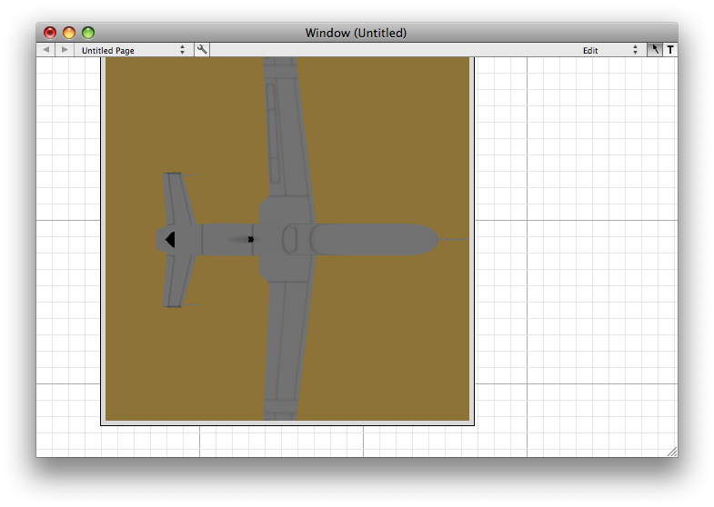

One of the four types of plugins available to VisualCommander, Display Plugins provide visualization of the data from Sessions and can provide control, in the form of Commands, to those sessions. Users can write their own Display Plugins to tailor their visualization to precisely the problem at hand, in addition to providing customized command input systems. For instance, a display might read data from a joystick to provide flight control commands to an aircraft simulation - or to actual aircraft hardware. All of this customization can be done by the end user, rather than requiring modification to VisualCommander.
This page explains how to write new display plugins. Display plugins are used to produce OpenGL displays for data. They can also be used as standalone tools for simulations or other purposes. You could conceivably do all of our programming in display plugins without using any other tools.
Follow the following steps
When a display plugin is created two classes are create. One is the "View" class and the other is the "Controller" class. The first does all the drawing. The second supplies the interface to VisualCommander.
The prepareOpenGL method is where all your OpenGL initialization code goes. This includes initializing objects and the light model. In the following code we initialize three objects, a vehicle terrain and a sky box. All three are read in as Wavefront OBJ models. The gu_drawable class handles all the details of reading in textures and the models themselves. Models are read in through a gu_manager. In this display we use a very simple ambient light model with the light set up to be pure white.
- (void)prepareOpenGL {
pss_init_opengl();
// white background
glClearColor(1.0, 1.0, 1.0, 1.0);
glEnable (GL_LIGHTING);
glShadeModel (GL_SMOOTH);
glEnable(GL_DEPTH_TEST); // Enables Depth Testing
glDepthFunc(GL_LEQUAL); // The Type Of Depth Testing To Do
glHint(GL_PERSPECTIVE_CORRECTION_HINT, GL_NICEST); // Really Nice Perspective Calculations
// Only use ambient lighting
GLfloat globalAmbient[] = {1.0f, 1.0f, 1.0f, 1.0f};
glLightModelfv(GL_LIGHT_MODEL_AMBIENT, globalAmbient);
glLightModeli(GL_LIGHT_MODEL_TWO_SIDE, true);
gu_manager *gm = gu_manager::shared_manager();
// Get the model
terrain = new gu_drawable (gm->top_object_in_bundle ("Land"));
vehicle = new gu_drawable (gm->top_object_in_bundle ("Globalhawk"));
skybox = new gu_drawable (gm->top_object_in_bundle ("SkyboxT"));
// Set the initial parameters
terrain->set_position (0, 0, 0);
terrain->set_orientation (0, 0, 0);
terrain->set_scale( landscale );
skybox->set_position (0, 0, 0);
skybox->set_orientation (0, 0, 0);
skybox->set_scale( skyscale );
vehicle->set_position (0, 0, 0);
vehicle->set_orientation (0, 0, 0);
vehicle->set_scale( globalhawkscale );
camera->set_target( vehicle );
}
The following member draws the three objects. We need to do a fixed rotation of the terrain so that it matches our coordinate system (with y up). We also need to scale just the x and z directions too so it is most convenient to use a 4 by 4 transformation matrix. We then draw the sky box. Finally we draw the vehicle. The inputs (discussed below) are the position and quaternion. We combine these into a 4 by 4 transformation matrix and apply it to the vehicle. At the bottom of the member function we tell the camera to point at the vehicle. In each case we need an object->draw() to draw the object. The function q_to_mat operates on the input quaternion to convert it to a transformation matrix that occupies the upper left 3 by 3 submatrix of the 4 by 4 matrix.
- (void)drawObjects{
float m[16];
// Draw the terrain
m[0] = 1.0; m[4] = 0.0; m[ 8] = 0.0; m[12] = 0.0;
m[1] = 0.0; m[5] = 0.0; m[ 9] = 1.0; m[13] = 0.0;
m[2] = 0.0; m[6] = -1.0; m[10] = 0.0; m[14] = 0.0;
m[3] = 0.0; m[7] = 0.0; m[11] = 0.0; m[15] = 1.0;
// Scale only y and x
m[0] *= landscale;
m[6] *= landscale;
terrain->set_transformation(m);
terrain->draw();
// Draw the skybox
skybox->set_scale(skyscale);
skybox->draw();
// Draw the vehicle
ml_matrix q = *quaternion;
q(2,1) = - q(2,1);
q(3,1) = - q(3,1);
q(4,1) = - q(4,1);
ml_matrix mQ = q_to_mat( q );
m[ 0] = mQ(1,1); m[ 4] = mQ(1,2); m[ 8] = mQ(1,3); m[12] = (*position)(1,1);
m[ 1] = mQ(2,1); m[ 5] = mQ(2,2); m[ 9] = mQ(2,3); m[13] = (*position)(2,1);
m[ 2] = mQ(3,1); m[ 6] = mQ(3,2); m[10] = mQ(3,3); m[14] = (*position)(3,1);
m[ 3] = 0.0; m[ 7] = 0.0; m[11] = 0.0; m[15] = 1.0;
vehicle->set_transformation(m);
vehicle->set_position((*position)(1,1),(*position)(2,1),(*position)(3,1));
camera->set_target( vehicle );
vehicle->draw();
}
input has information about the incoming data. The member function looks at the name to identify the data. The value contains the data. We go through some contortions to get the data into the desired ml_matrix form. The last line [glView setNeedsDisplay:YES] tells the view object that when this new data is input the view needs to be updated. The class looks at incoming data and decides whether it is the quaternion or position. Anything else is ignored. It then calls the member functions in the view which read in the data.
- (void)newDataValue:(VCValue *)value forPoint:(VCInputController *)input isCurrent:(BOOL)flag {
if (flag) {
if ([[input name] isEqualToString:@"quaternion"])
{
double q0 = [value doubleAtRow:1 column:1];
double q1 = [value doubleAtRow:2 column:1];
double q2 = [value doubleAtRow:3 column:1];
double q3 = [value doubleAtRow:4 column:1];
ml_matrix quaternion(4,1);
quaternion(1,1) = q0; quaternion(2,1) = q1; quaternion(3,1) = q2; quaternion(4,1) = q3;
[glView setQuaternion:&quaternion];
}
else if ([[input name] isEqualToString:@"position"])
{
double x = [value doubleAtRow:1 column:1];
double y = [value doubleAtRow:2 column:1];
double z = [value doubleAtRow:3 column:1];
ml_matrix position(3,1);
position(1,1) = x; position(2,1) = y; position(3,1) = z;
[glView setPosition:&position];
}
[glView setNeedsDisplay:YES];
}
}
The corresponding member functions in the VIew class are shown below.
- (void)setQuaternion:(ml_matrix*)value {
*quaternion = *value;
}
- (void)setPosition:(ml_matrix*)value {
*position = *value;
}
The test code is written in an m-file with suffix ".m" (Matlab) file. This should not be confused with an Objective C file which also has the suffix ".m". A test file that creates a quaternion matrix (4 by 1) and a position matrix (3 by 1) is shown below.
position(1,1) = 10000*(1 - cos(0.01*time)); position(2,1) = 160.0; position(3,1) = 10000*sin(0.01*time); quaternion(1,1) = cos(time); quaternion(2,1) = sin(time); quaternion(3,1) = 0.0; quaternion(4,1) = 0.0;
time is an input variable that is input into the m-file from VisualCommander. The inputs are read into the display with the following code. If you wanted to read in doubles you would use VCDataTypeDouble.
The second member function reads in the data from the m-file script.
#pragma mark test data
+ (NSArray *)testDataPoints {
return
[NSArray arrayWithObjects:
[NSDictionary dictionaryWithObjectsAndKeys:
@"test.m", @"script",
[NSArray arrayWithObjects:
[NSDictionary dictionaryWithObjectsAndKeys:
@"quaternion", @"alias",
@":quaternion", @"path",
@"", @"units",
[NSNumber numberWithInt:VCDataTypeMatrix], @"type",
@"quaternion", @"description",
[NSArray arrayWithObjects:
[NSDictionary dictionaryWithObject:@"quaternion" forKey:@"info"],
nil], @"attributes",
[NSNumber numberWithBool:YES], @"autolink",
nil
],
[NSDictionary dictionaryWithObjectsAndKeys:
@"position", @"alias",
@":position", @"path",
@"", @"units",
[NSNumber numberWithInt:VCDataTypeMatrix], @"type",
@"position", @"description",
[NSArray arrayWithObjects:
[NSDictionary dictionaryWithObject:@"position" forKey:@"info"],
nil], @"attributes",
[NSNumber numberWithBool:YES], @"autolink",
nil
],
nil
], @"outputs",
[NSArray arrayWithObjects:
[NSDictionary dictionaryWithObjectsAndKeys:
@"time", @"alias",
@":time", @"path",
[NSNumber numberWithBool:YES], @"updateOnChange",
nil
],
nil
], @"inputs",
[NSNumber numberWithDouble:0.05], @"updateInterval",
nil
],
nil
];
}
A geobundle is a folder of the name object.geobundle. A geobundle folder has a minimum of 3 files

Double click on VisualCommander. The following window appears.

Pull down on the Window menu and select Tools.

Drag X52Scene to the window.
Keep the window in edit mode. Control click and the setup menu will appear. Select Link Test Data. The aircraft will start rotating and moving. Select run mode. You can now use the mouse to move the camera.